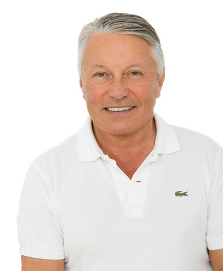
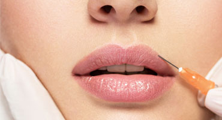
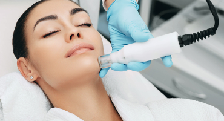
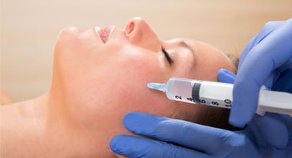
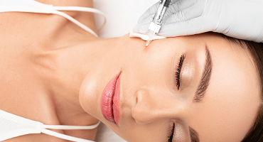
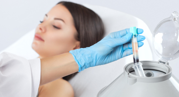

Beauty Clinic Mallorca lleva 15 años en funcionamiento. Ofrecemos un servicio completo de medicina estética moderna, que incluye el tratamiento de las arrugas de expresión. Nuestra sala de tratamiento se encuentra en la planta baja y cuenta con equipamiento actual y productos de fabricantes reconocidos.
Nuestra clínica se encuentra en Plaza Bendinat, donde encontrará otras consultas médicas, tiendas, varios restaurantes y un parking subterráneo gratuito para todos los pacientes. Estamos a solo 5 minutos en coche de Palma y a unos 20 minutos de Andratx.
En Beauty Clinic Mallorca, el concepto antienvejecimiento del Dr. Erik Koerge incluye una serie de terapias mínimamente invasivas, adaptadas a distintas necesidades, como la calidad y la textura de la piel, el contorno facial y la firmeza cutánea. Nuestro objetivo es refrescar y rejuvenecer su aspecto sin que parezca extrañamente cambiado.
El Dr. Erik Koerge cuenta con más de 20 años de experiencia en el tratamiento de arrugas y en el rejuvenecimiento facial sin cirugía, con formación en institutos de referencia. Nuestra clínica aspira a los más altos estándares en todos sus tratamientos, con la menor interrupción posible de su vida cotidiana, tanto si reside en Mallorca como si nos visita durante sus vacaciones.






El tratamiento está indicado para adultos a partir de 18 años que desean reducir las arrugas dinámicas causadas por la expresión facial, en particular las líneas de la frente, las patas de gallo y las arrugas del entrecejo. Durante la consulta en Beauty Clinic Mallorca, el Dr. Koerge revisará su historial médico y hablará con usted sobre sus objetivos estéticos para determinar si el tratamiento es adecuado para usted. Puede no estar recomendado durante el embarazo o la lactancia, ni en personas con determinadas enfermedades neurológicas.
Los resultados suelen durar entre 3 y 6 meses, según factores individuales como el metabolismo, la actividad muscular y la zona tratada. A medida que el efecto desaparece de forma gradual, la actividad muscular vuelve y las arrugas pueden reaparecer. Los tratamientos de mantenimiento periódicos pueden ayudar a conservar el aspecto deseado. El Dr. Koerge le recomendará un calendario de tratamiento adecuado en las citas de seguimiento.
Después del tratamiento, evite frotar o masajear las zonas tratadas durante al menos 24 horas. Evite el ejercicio intenso, tumbarse en posición horizontal o inclinarse hacia delante durante las 4 horas siguientes. Puede aparecer un ligero enrojecimiento, hinchazón o pequeños hematomas en los puntos de inyección, que suelen desaparecer en unas horas o días. La mayoría de los pacientes puede retomar sus actividades habituales de inmediato. El resultado completo es visible en un plazo de 7 a 14 días.
Los efectos secundarios más frecuentes son hematomas, hinchazón o molestias leves y temporales en los puntos de inyección. Con poca frecuencia pueden aparecer dolor de cabeza, síntomas similares a los de la gripe o una caída temporal del párpado. El Dr. Koerge le explicará todos los posibles riesgos durante la consulta y adaptará el tratamiento a sus necesidades individuales.
Los rellenos están indicados para adultos que desean restaurar el volumen facial, suavizar arrugas o realzar contornos faciales como los labios y los pómulos. Son adecuados para personas con signos de envejecimiento leves o moderados que prefieren un rejuvenecimiento sin cirugía. En Beauty Clinic Mallorca, el Dr. Koerge valora el estado de su piel, su historial médico y sus objetivos estéticos para recomendarle el relleno de ácido hialurónico más adecuado. Los rellenos pueden no ser adecuados durante el embarazo o la lactancia, ni en caso de infecciones cutáneas activas.
La duración depende del tipo de producto, de la zona tratada y del metabolismo de cada persona. Los resultados suelen durar entre 6 y 18 meses. El ácido hialurónico se degrada de forma natural y gradual con el tiempo. Los tratamientos de mantenimiento pueden ayudar a conservar el resultado. El Dr. Koerge le orientará de forma personalizada sobre los intervalos de tratamiento adecuados según sus necesidades y el relleno utilizado.
Después del tratamiento, evite tocar o presionar las zonas tratadas durante al menos 6 horas. Evite el ejercicio intenso, el alcohol y la exposición a calor excesivo (sauna, rayos UVA) durante 24 a 48 horas. Puede aparecer una ligera hinchazón, enrojecimiento o hematomas, que suelen remitir en unos días. Aplicar frío puede ayudar a reducir la hinchazón. Duerma con la cabeza elevada la primera noche. El resultado mejora a medida que desaparece la hinchazón inicial, y el aspecto final es visible en unas 2 semanas.
Los efectos secundarios más frecuentes son hinchazón, hematomas, enrojecimiento y sensibilidad temporales en los puntos de inyección. Con menor frecuencia pueden aparecer bultos, asimetrías o reacciones alérgicas. Las complicaciones graves, como la oclusión vascular, son raras, pero requieren atención médica inmediata. El Dr. Koerge sigue protocolos estrictos para reducir los riesgos.
La mesoterapia está indicada para adultos que desean mejorar la calidad, la hidratación y la textura de la piel del rostro, el cuello y el escote. Es especialmente adecuada para quienes presentan los primeros signos de envejecimiento, líneas finas, falta de luminosidad o daños cutáneos causados por el entorno. El Dr. Koerge valorará su tipo de piel y sus inquietudes durante la consulta para determinar si la mesoterapia es adecuada para usted. Puede no estar recomendada durante el embarazo o la lactancia, ni en personas con afecciones o infecciones cutáneas activas.
Los resultados varían según el estado de la piel, los hábitos de vida y el protocolo de tratamiento. Las primeras mejoras en la luminosidad y la hidratación pueden apreciarse en pocos días. Para obtener resultados óptimos suele ser necesario un ciclo de 3 a 6 sesiones, con un intervalo de 2 a 4 semanas entre ellas. Los resultados pueden durar varios meses; se recomiendan tratamientos de mantenimiento cada 3 a 6 meses para mantener el rejuvenecimiento de la piel y protegerla frente a los daños ambientales.
Después de la mesoterapia, evite tocar o lavar la zona tratada durante al menos 6 horas. No aplique maquillaje ni productos cosméticos agresivos y evite la exposición directa al sol o a fuentes de calor durante 24 horas. Un ligero enrojecimiento, hinchazón o pequeñas marcas de inyección son normales y suelen desaparecer en 24 a 48 horas. Evite el ejercicio intenso y el alcohol durante las 24 horas siguientes. Aplique a diario un protector solar de amplio espectro para proteger su piel y favorecer el resultado del tratamiento.
Los efectos secundarios más frecuentes son enrojecimiento, hinchazón, hematomas o ligeras molestias temporales en los puntos de inyección. En raras ocasiones pueden producirse infecciones, reacciones alérgicas o alteraciones de la pigmentación de la piel. El Dr. Koerge utiliza productos de calidad y sigue estrictas normas de higiene para reducir los riesgos.